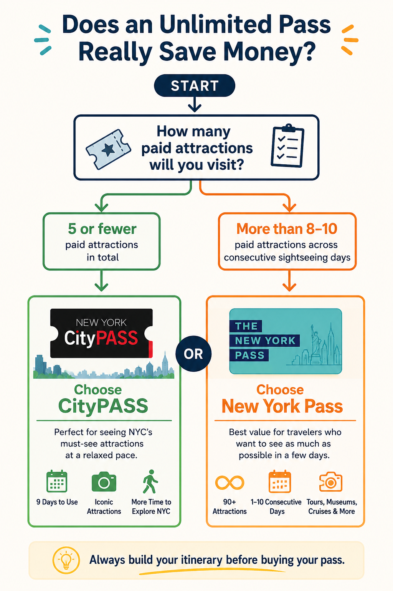

Planning a trip to New York City comes with one unavoidable realization: tickets are expensive. An observation deck here, a museum there, a ferry ride to the Statue of Liberty, maybe a cruise around Manhattan — before you know it, you've spent several hundred dollars before you've even thought about Broadway shows, food, or shopping.
That's exactly why attraction passes have become so popular. Two names come up over and over again: CityPASS and the New York Pass. Both promise to save you money. Both include many of New York City's biggest attractions. Both claim they're the smartest way to sightsee.
But here's the problem. Most comparison articles simply list what's included and declare a winner. That's not how people actually travel. The truth is surprisingly simple: neither pass is universally better. The better pass is the one that matches how you actually travel. This guide goes beyond the marketing.
Throughout this guide, “New York Pass” refers specifically to the Go City New York Pass (All-Inclusive Pass), which provides unlimited access to 90+ attractions for a selected number of consecutive days. It does not refer to the Go City Explorer Pass or Go City Essentials Pass, which work differently and are not covered in this comparison.
Quick Answer: Which Pass Should You Buy?
| If you... | Buy... |
|---|---|
| Want to see NYC's biggest attractions without rushing | CityPASS |
| Plan to visit 4–6 attractions every day | New York Pass |
| Are visiting NYC for the first time | Usually CityPASS |
| Love museums, tours, and packed itineraries | Usually New York Pass |
| Prefer slower travel with time to explore neighborhoods | CityPASS |
| Want maximum flexibility and the largest attraction list | New York Pass |
That's the simple answer. The rest of this guide explains why.
The Biggest Mistake People Make
Before we compare passes, there's one mistake that costs travelers far more money than choosing the wrong pass.
They buy the pass first. Then they build their itinerary around it.
That sounds harmless until Day 3 of your vacation. You've already visited the Empire State Building, Top of the Rock, Edge, MoMA, and Circle Line Cruise. It's only 4:00 PM. Your feet hurt. You've already walked nearly 20,000 steps. But then you think: “I've already paid for the pass... I should squeeze in another museum.” Suddenly your vacation starts feeling like a checklist instead of an adventure.
People begin rushing through world-class museums in 45 minutes. Skipping lunch. Taking photos without actually enjoying where they are. Choosing attractions because they're “free with the pass” instead of because they're genuinely interested. That's backwards.
List every attraction you genuinely want to visit. Group them by neighborhood. Estimate how many paid attractions fit comfortably into each day. Then compare the total ticket price against the cost of each pass. It takes 15 minutes and can save you hundreds of dollars.
Before buying any attraction pass, it’s worth mapping out your itinerary. Our complete NYC trip planning guide shows you exactly how to build a realistic schedule without exhausting yourself.
Understanding the Two Passes
Although they're often compared, CityPASS and the New York Pass are built on completely different ideas. Understanding this difference makes choosing much easier.
The Curated Bundle
A carefully selected bundle of NYC's greatest hits — designed for first-time visitors who want the classics without the pressure.
- ✓ 5 major attractions total
- ✓ 2 fixed + 3 you choose
- ✓ Valid for 9 consecutive days after first use
- ✓ Visit attractions any time — no daily pressure
- ✓ Relaxed, natural pacing
The Unlimited Pass
Access to 90+ experiences. Buy by consecutive day — the more you pack in, the greater the savings.
- ✓ 90+ attractions included
- ✓ Available in 1, 2, 3, 4, 5, 7 or 10-day options
- ✓ All 4 major observation decks
- ✓ Guided tours, cruises, bike tours
- ⚠ Clock starts on first use — consecutive days only
CityPASS vs New York Pass at a Glance
| Feature | CityPASS | New York Pass |
|---|---|---|
| Attractions Included | 5 major attractions | 90+ attractions |
| Style | Curated bundle | Unlimited sightseeing |
| Best Pace | Relaxed | Fast-paced |
| Validity | 9 consecutive days after first use | 1–10 consecutive days |
| Planning Required | Moderate | High |
| Mobile Tickets | Yes | Yes |
| Reservation Needed | Some attractions | Many popular attractions |
| Official Savings | Up to 42% | Up to 50% |
Looking at the table, the New York Pass might seem like the obvious winner — more attractions, higher advertised savings, greater flexibility. But numbers don't tell the whole story. The real question isn't how many attractions are included. It's how many attractions you'll realistically visit without turning your vacation into a marathon.
Who Is This Guide For?
This comparison is especially useful if you're visiting New York City for the first time, staying between 3 and 7 days, planning to visit several paid attractions, or trying to decide whether a sightseeing pass is worth the money. If you're only planning to visit one or two attractions, you probably don't need either pass. But if your itinerary includes observation decks, museums, the Statue of Liberty, or sightseeing cruises, there's a good chance one of these passes could save you a significant amount — provided you choose the right one.
Check the Latest Pass Prices Before You Buy
Prices, included attractions, and promotions can change. Always verify the latest details directly before purchasing — the prices and inclusions below may differ from what you see at checkout.
What's Actually Included?
On paper, this comparison seems almost unfair — one pass gives you 5 attractions, the other advertises 90+. But this is where marketing can be a little misleading. Most visitors don't travel to New York with a list of ninety attractions. In fact, if you ask first-time visitors what's on their itinerary, you'll usually hear the same names repeated:
- Empire State Building
- Statue of Liberty & Ellis Island
- Top of the Rock
- 9/11 Memorial & Museum
- American Museum of Natural History
- One observation deck
- Maybe a sightseeing cruise
Notice something? Almost every one of those is already covered by CityPASS. That's why comparing the quantity of attractions doesn't tell the whole story.
Fixed (Every Pass)
- Empire State Building
- American Museum of Natural History
Your Choice — Pick 3
- Top of the Rock
- Statue of Liberty & Ellis Island
- 9/11 Memorial & Museum
- Circle Line Cruise
- Intrepid Museum
- Guggenheim Museum
Observation Decks
- Empire State Building
- Edge
- Top of the Rock
- One World Observatory
Museums
- American Museum of Natural History
- MoMA
- Guggenheim
- Whitney
- Intrepid
Tours & Cruises
- Statue of Liberty Ferry
- Circle Line Cruises
- Walking, Bike & TV tours
New York isn’t a theme park where attractions sit next to one another. Every attraction means walking, subway rides, security checks, queuing, lunch, and breaks. By the third museum of the day, many visitors are simply museumed out. The biggest attraction list isn’t automatically the best value — the best value comes from attractions you’ll genuinely enjoy.
Validity: This Changes Everything
One of the most overlooked differences between these passes isn’t what’s included — it’s how long you have to use them. This single detail changes the pace of your entire trip.
9 Days After First Use
Enormous flexibility. A typical 5-day schedule might use the pass on Days 1, 3, and 5 — leaving whole days free for neighborhoods, parks, and unplanned moments.
Rain? Rest day? No problem — just visit a museum tomorrow instead.
Consecutive Calendar Days
Once you scan your first attraction, the clock starts. A 3-day pass expires at midnight on Day 3 — even if you’ve only used half the attractions you planned.
Unused days can’t be paused or extended.
Imagine it rains all day Tuesday. Or everyone wakes up exhausted after walking 25,000 steps on Monday. With CityPASS, that’s no big deal — visit a museum tomorrow instead. With the New York Pass, you’ve already paid for Tuesday whether you use it or not. That’s not a flaw — it’s simply how the product is designed. If you enjoy starting at 8:00 AM and squeezing every minute out of the day, you’ll love it. If you prefer slow mornings and spontaneous exploring, it may feel restrictive.
Reservations: A Common Surprise
Both CityPASS and the New York Pass require reservations for several popular attractions — including the Empire State Building, Edge, Top of the Rock, and the Statue of Liberty Ferry. During summer, Thanksgiving, Christmas, Spring Break, and long weekends, you may own the pass but find the 10:00 AM time slot you wanted is already gone. Reserve your attraction times immediately after purchasing your pass.
Both passes are fully digital. Once purchased, your pass lives on your phone. Simply present the QR code at each attraction — no printing, no paper vouchers, no worrying about losing tickets halfway through your trip.
A Hidden Difference Most Blogs Ignore
CityPASS quietly encourages something that’s surprisingly valuable: free time. Because you only have five attractions, you naturally leave room for experiences that don’t require admission — and those often become people’s favorite memories.
- Walking through Central Park
- Watching sunset from Brooklyn Bridge Park
- Exploring Greenwich Village
- Riding the Staten Island Ferry
- Visiting Grand Central Terminal
- Wandering SoHo and Chelsea Market
- Street performers in Washington Square Park
When every hour is already filled with paid attractions, it’s easy to miss the simple moments that make New York feel like New York.
Some of our favorite NYC experiences don’t cost a dollar. Before filling every hour with paid attractions, check out our guide to the best free things to do in New York City.
Which Pass Actually Saves More Money?
You’ll often see bold claims like “Save up to 50%!” Technically, that’s true. But whether you save 50% depends entirely on how you use the pass. Think of it like an all-you-can-eat buffet. If you eat one plate, it’s terrible value. If you arrive hungry, you’ll probably walk away feeling like you got your money’s worth. The pass itself doesn’t magically save money. Your itinerary does.
Scenario 1: The Classic First-Time Visitor
- Empire State Building
- Statue of Liberty & Ellis Island
- Top of the Rock
- American Museum of Natural History
- 9/11 Memorial & Museum
Sound familiar? These are exactly the attractions CityPASS was designed around. You could buy a New York Pass and visit these same places — but why pay for access to 90+ attractions if you’re only planning to visit five? In this situation, CityPASS is almost always the simpler and more economical option, and you get the freedom to spread those attractions across several days without a countdown clock.
Scenario 2: The “See Everything” Traveler
- Empire State Building
- Top of the Rock
- Museum of Modern Art
- Circle Line Cruise
- Statue of Liberty
- Ellis Island
- Intrepid Museum
- Edge
- One World Observatory
- Walking Tour
- Bike Tour
- Whitney Museum
Buying individual tickets for all those attractions would quickly become expensive. This is exactly where the New York Pass starts making sense. The more included attractions you comfortably fit into each day, the lower your effective cost per attraction becomes.
Scenario 3: The Relaxed Traveler
If your style involves stopping for coffee, browsing bookstores, watching people in Washington Square Park, and finding a restaurant because it smells amazing — be careful not to overbuy. A huge attraction pass can create unnecessary pressure, making you feel like you should skip a neighborhood because another museum is “included.” That’s the opposite of what travel should feel like.
The Hidden Cost That Most People Forget
Most comparisons only focus on ticket prices. But attractions cost something else: time. And in New York, time disappears surprisingly quickly.
| Activity | Realistic Time Required |
|---|---|
| Observation deck | 1.5–2 hours |
| Statue of Liberty & Ellis Island | 4–6 hours |
| Museum | 2–3 hours |
| Circle Line Cruise | Around 2 hours |
| Lunch | 45–60 minutes |
| Subway ride | 15–30 minutes |
| Walking between stops | 20–40 minutes |
| Security & queues | 10–45 minutes |
Suddenly those ambitious plans to visit seven attractions in one day don’t seem quite so realistic.
The first observation deck is exciting. The second one is still impressive. By the fourth? You might start saying: “Yep... that’s another great view.” The same thing happens with museums. Once your brain is overloaded, you stop reading exhibit descriptions and start walking faster. You begin collecting attractions instead of enjoying them.
The Psychology of “Getting Your Money’s Worth”
People behave differently once they’ve bought an unlimited attraction pass. Imagine you’re walking through Central Park. You discover a jazz performance. The weather is perfect. People are relaxing on the grass. Normally you’d stay — but now you’re thinking: “I already paid for another attraction...” So you leave. Not because you want to. Because you feel like you should.
Buy the pass that fits your itinerary, not the one with the biggest advertised savings. Freedom is worth something too. You don’t have to visit an attraction simply because it’s included.
Which Pass Fits Your Travel Style?
Usually CityPASS
Young kids slow things down — snack breaks, bathroom stops, shorter attention spans. Five carefully chosen attractions often fit this rhythm better than trying to maximize an unlimited pass.
Either Can Work
Couples usually move faster and adapt plans more easily. If you enjoy busy sightseeing days, the New York Pass is easier to justify. If you prefer leisurely brunches and one major attraction per day, CityPASS is the better match.
Often New York Pass
Solo travelers move fastest — no waiting, no group decisions. If you’re comfortable with long sightseeing days and genuinely plan to use it, the New York Pass can offer outstanding value.
When Each Pass Wins
🌟 Choose CityPASS If...
- It’s your first trip to New York City
- You’re staying between 3 and 5 days
- You mainly want to see the iconic attractions
- You enjoy traveling at a relaxed pace
- You’d rather explore a neighborhood than rush to another museum
- You’re traveling with young children
📈 Choose New York Pass If...
- You’re planning full sightseeing days from morning to evening
- You genuinely enjoy museums
- You want to compare multiple observation decks
- You’re interested in walking tours, cruises, and specialty experiences
- You’ve already mapped out a busy itinerary
- You’re a solo traveler or energetic couple
Not sure how many attractions realistically fit into each day? Our step-by-step NYC planning guide helps you build an itinerary that’s exciting without being exhausting.

Common Mistakes People Make When Buying an NYC Attraction Pass
Buying a Pass Before Planning Your Trip
The most common and expensive mistake. Do it the other way: write down every attraction you genuinely want to visit, group them by neighborhood, estimate how many paid attractions fit comfortably into each day, then compare the cost of individual tickets against each pass. It takes 15 minutes and can save you hundreds of dollars.
Trying to Visit Too Much
Some of the best NYC memories cost absolutely nothing — watching sunset from Brooklyn Bridge Park, finding a tiny pizza shop with four tables, walking through SoHo without any destination, listening to musicians in Washington Square Park. Don’t sacrifice those moments just because another museum is included.
Forgetting About Reservations
Owning a pass doesn’t mean you can simply turn up whenever you like. Many popular attractions require advance reservations. Book your slots as soon as you purchase your pass — otherwise you may find yourself planning your entire day around the only remaining available time.
Ignoring Travel Time
Google Maps makes everything look close. It isn’t. Subway rides, security, walking between attractions, and finding lunch all add up. A schedule that looks perfectly reasonable on paper can quickly become exhausting. Always leave breathing room between major attractions.
Booking Every Observation Deck
Visitors often assume they need Edge, Empire State, Top of the Rock, One World Observatory, and SUMMIT One Vanderbilt. After your second or third skyline view, the differences become more subtle than many people expect. If you’re using CityPASS, you’ll naturally limit yourself to one or two — which leaves room to experience the city from street level, where New York really comes alive.
Final Verdict: CityPASS vs New York Pass
If you’re looking for one simple answer, here it is.
If you want a relaxed, classic New York City experience. It covers the attractions most first-time visitors already plan to see, gives you nine days to use them, and leaves plenty of time to explore neighborhoods, parks, and local restaurants without watching the clock.
If you’re determined to fit as much sightseeing as possible into a few consecutive days. With access to more than 90 attractions, it can provide outstanding value — but only if your itinerary is busy enough to justify it.
Neither pass is objectively better. They’re simply designed for different travelers. The biggest savings don’t come from buying the pass with the most attractions — they come from buying the pass that matches the trip you’ve already planned.
Plan your itinerary first. Buy your pass second. You’ll spend less money, avoid unnecessary stress, and enjoy New York City for what it really is — not just a list of attractions to tick off.
Quick Comparison Summary
| Category | Winner |
|---|---|
| Best for First-Time Visitors | CityPASS |
| Best for Relaxed Sightseeing | CityPASS |
| Best for Families | CityPASS (for most itineraries) |
| Best for Museum Lovers | New York Pass |
| Best for Packed Sightseeing Days | New York Pass |
| Largest Attraction Selection | New York Pass |
| Easiest to Use | CityPASS |
| Most Flexible Validity | CityPASS |
| Best Potential Savings | New York Pass (if heavily used) |
| Best Overall Value | It depends on your itinerary |
Compare Current Prices Before You Purchase
Prices, included attractions, and promotions change regularly. Always verify the latest details on each provider’s site before purchasing — especially before peak travel seasons when prices may increase.